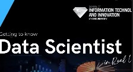
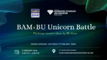
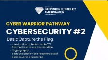
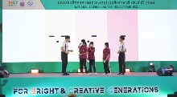
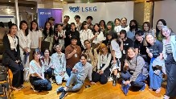

| Image | Workshop | Description | Time |
|---|---|---|---|
|  | สัมมนาฟรี: Data Science |
สัมมนาฟรี กับตัวจริงด้าน Data Science โดย คุณณัฐมน จำนงค์ Data Scientist and Researcher, Data Science and Computational Intelligence Lab Department of Computer Science, School of Science, KMITL สัมมนานี้เหมาะกับน้องๆ ที่:
|
Wed, 17:00 - 19:00 |
|  | โครงการ "BAM x BU Unicorn Battle" | คณะเทคโนโลยีสารสนเทศและนวัตกรรม ร่วมกับ บริษัท บริหารสินทรัพย์กรุงเทพพาณิชย์ จำกัด (มหาชน) จัดโครงการ Pitching creative ideas by BU Genz เพื่อฝึกทักษะการนำเสนอเทคโนโลยี/นวัตกรรม เพื่อแก้ปัญหาได้จริง ผลักดันนักศึกษาเรียนรู้กระบวนการธุรกิจผสมผสานไอเดียนวัตกรรม และเรียนรู้จากตัวจริงภาคอุตสาหกรรม | Sat, 14:30 - 16:30 |
|  | โครงการ "Cyber Warrior Pathway Cybersecurity" |
โครงการอบรมพื้นฐานด้าน Cybersecurity โดยวิทยากร ผู้เชี่ยวชาญ นาวาตรี ดร.เอก โอสถหงส์ เป็นวิทยากรให้กับน้องๆ ในสาขาของ BU-ITI โดยเน้นพื้นฐานเกี่ยวกับสาขา Cybersecurity และต่อยอดเพื่อไปสู่เส้นทางการแข่งขันด้าน Cybersecurity ระดับชาติและนานาชาติต่อไป หัวข้ออบรม:
|
Mon, Sep 4, 08:00 - 10:00 |
|  | มหกรรมวิทยาศาสตร์และเทคโนโลยีแห่งชาติ | "กิจกรรม MORSE CODE" ในนามทูตเยาวชนวิทยาศาสตร์ไทย ในการร่วมสื่อสารวิทยาศาสตร์ให้กับน้องๆ ในงานมหกรรมวิทยาศาสตร์และเทคโนโลยีแห่งชาติ ประจำปี 2566 กิจกรรมที่สร้างสรรค์จากทูตเยาวชนวิทยาศาสตร์ไทย ที่จะมากระตุ้นความเข้าใจความสนใจ และการสื่อสารด้านวิทยาศาสตร์ในช่องทางที่หลากหลาย เพื่อสร้างสังคมให้อยู่ในรูปแบบของการเข้าใจวิทยาศาสตร์ง่ายขึ้น และสร้างเครือข่าย #นักสื่อสารวิทยาศาสตร์ | 11 Aug, 08:30 - 16:30 |
|  | Code; Without Barriers Meetup Bangkok |
บริษัท ไมโครซอฟท์ (ประเทศไทย) จำกัด ร่วมกับ Girls in Tech และ Thailand Community Leaders จะจัดกิจกรรม Code; Without Barriers Meetup Bangkok เพื่อเป็นการสร้างแรงบันดาลใจและเป็นการแนะแนวการศึกษาให้เยาวชนไทยให้สนใจศึกษาต่อด้านวิทยาการคอมพิวเตอร์ ร่วมกิจกรรม Cloud Skills Challenge โดย Microsoft จัดงานฝึกอบรมออนไลน์สอนหลักการพื้นฐานของ Cloud Computing และการสร้างแอปด้วยตนเองด้วย Power. |
27 May, 13:00 - 16:00 |